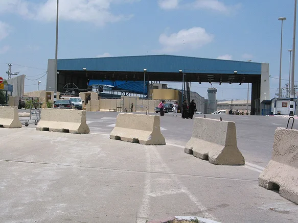
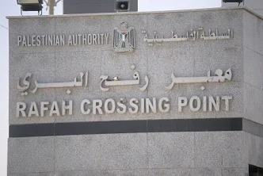
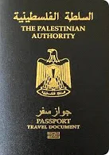

“O documento, o dia do nascimento, eles podem escolher nossa vida.”
Basel Khalil (nome fictício, utilizado para preservar sua identidade) resume assim um dos maiores problemas que enfrenta: a falta de poder que o passaporte que carrega lhe proporciona. É uma descrição de como os documentos determinam a vida daqueles que não têm outra alternativa a não ser sair do local onde vivem.
O que é uma pessoa sem passaporte? Juridicamente, é definida como alguém apátrida, que é definida pela Organização das Nações Unidas (ONU) como uma pessoa que nenhum Estado considera seu nacional. Assim, ela não tem a vinculação que lhe garante direitos básicos.
Esse não é o caso dos palestinos. Eles possuem passaportes, documentos e um Estado, mas, na prática, o reconhecimento limitado e conturbado da Palestina faz com que as possibilidades dos seus cidadãos sejam quase tão limitadas quanto.
Basel Khalil e sua esposa, Samar Khalil (nome fictício, utilizado para preservação de identidade), viveram essa limitação.
Nascido na Arábia Saudita, sua família é palestina, assim como seus documentos, já que Basel nasceu como refugiado. “Eu nasci como refugiado”. A história dele, na verdade, começa com seu avô, que foi deslocado da sua vila originária, Yasur, em Gaza.
Marcado por guerras e perdas, seus sonhos não condiziam com o que o país tinha a oferecer naquele momento: instabilidade, medo e falta de direitos civis. Assim, aos 18 anos, ele decidiu aplicar para um MBA na Malásia como uma forma de escapar da situação.
Depois de estudar lá por um ano, voltou para Gaza para estudar administração. Durante esse tempo, casou-se com Samar, e a vontade de construir uma família os levou a querer sair da Palestina. “Eu decidi me casar e sair de Gaza porque não posso construir uma família morando lá. Não tem segurança, não tem uma vida estável.”
Mas procurar outro país para viver não foi fácil, e seu maior empecilho foi seu passaporte.
O controle por trás do documento
“Até os passaportes, do lado israelense, eles têm que carimbar, como que para dar a permissão para emitir. A identidade palestina que temos, quem nos autoriza a tê-la? Israel. Então, eles controlam tudo, até os documentos que possuímos.”
A emissão do passaporte palestino está sujeita à aprovação do Estado de Israel. Assim como a maioria dos documentos que, mesmo sendo emitidos pelo Ministério do Interior palestino desde 1995, estão sujeitos a essa aprovação do governo israelense, que justifica a ação como necessária por uma questão de segurança.
A organização não governamental palestina Instituto de Pesquisa Aplicada - Jerusalém (ARIJ), no relatório publicado em 2018, intitulado “The Israeli Permit Regime: Realities and Challenges” (O regime de permissões israelenses: Realidades e Desafios), expõe que o sistema israelense de permissões de viagem é imprevisível e não transparente. Além disso, o nível de exigência burocrática é extremamente elevado, o que leva os palestinos a terem que contratar advogados. A situação da população, que vive em extrema precariedade por conta da guerra, da instabilidade e de ter que se realocar diversas vezes por consequência da ocupação israelense, faz com que apenas esse passo de possuir os documentos necessários já seja um desafio.
“Não é fácil ir para os lugares sendo portador de um passaporte palestino. Você tem opções limitadas, sabe?”
A população palestina é um dos maiores grupos de refugiados no mundo. Segundo dados de 2024 da Agência das Nações Unidas de Assistência aos Refugiados da Palestina no Próximo Oriente (UNRWA), existem aproximadamente 6 milhões de palestinos refugiados pelo mundo. Isso considerando as pessoas que, mesmo vivendo em terras palestinas, são refugiadas, pois tiveram suas terras de origem ocupadas pelo Estado de Israel, assim como a família de Basel.
Em outubro de 2017, alguns dias após se casarem, eles aplicaram para um passaporte de turista para os Estados Unidos, pois parte de sua família já morava lá. Foi um processo complicado, que durou meses, mas conseguiram marcar uma entrevista com o consulado americano em Jerusalém.
Apenas ir até o consulado já se mostrou um grande problema. Além de ter que pedir permissão ao governo israelense para entrar em Jerusalém, tiveram que pegar o chamado “shuttle” até o consulado, que é um tipo de ônibus. Segundo a embaixada americana em Israel, esse é um serviço de locomoção disponibilizado pelas autoridades israelenses, que leva o palestino diretamente ao checkpoint de Erez e com retorno no mesmo dia.

Basel conta sua experiência com o serviço: “Você chega ao consulado e não pode sair do ônibus. E então, depois da entrevista, eles te colocam de volta no ônibus e você volta para Gaza.”
Na embaixada, o casal teve seu visto negado, o que não é incomum. Segundo um documento publicado pelo Departamento de Estado dos EUA, no ano de 2024, a porcentagem de vistos negados para palestinos foi de 44,51%. Para mérito de comparação, no mesmo ano, a porcentagem de visto brasileiro negado foi de 15,8%. Países que estavam em guerra, como a Rússia, tiveram uma porcentagem um pouco maior, de 38,56%. Ucrânia, 33,45%. Já os israelenses, 8,64%.
A segunda alternativa encontrada por eles foi tentar ir para o Egito. O país é um dos que mais recebe o grupo, mesmo não permitindo a entrada de palestinos expulsos de suas casas pelas forças israelenses. Mas, geograficamente, acaba sendo uma das únicas alternativas dos palestinos para sair da área de conflito.
A única fronteira internacional da Faixa de Gaza é Rafah, ao sul, que conecta a Palestina ao Egito. Essa é a única fronteira que não tinha presença física israelense, mas isso não quer dizer que os palestinos estavam autorizados a passar por ela. Isso porque, mesmo sem a presença física, a abertura ou não da passagem ainda estava sob controle israelense, que a bloqueou desde 2007 e, junto com o governo egípcio, transformaram Gaza no que muitos chamam hoje de “prisão a céu aberto”.

Mesmo assim, o casal não desistiu de tentar, até porque existiam momentos em que o governo do Egito abria a fronteira, mas sempre de forma esporádica e curta.
Basel teve que esperar um tempo até a fronteira abrir. Durante esse período, em dezembro de 2017, os palestinos começaram a fazer manifestações para pedir a abertura da passagem ao governo egípcio.
“No mês passado, estudantes de Gaza que precisam sair da Faixa e ingressar em programas universitários no exterior realizaram manifestações perto da passagem de fronteira. Esta semana, muitos deles conseguiram deixar a Faixa via Egito e, de lá, seguir para seus futuros campi. Juntamente com outros que solicitaram permissão para sair da Faixa para buscar tratamento médico indisponível em Gaza, visitar familiares ou viajar para reuniões de negócios, os passageiros foram reunidos em um estádio próximo, de onde embarcaram em vans rumo à passagem de fronteira. Centenas de pessoas chegaram ao ponto de encontro sem serem convidadas, na esperança de obter permissão para atravessar, mas sem sucesso.”
O número médio mensal de pessoas que atravessam Rafah em ambos os sentidos tem diminuído consistentemente desde 2013. No primeiro semestre de 2013, quando a travessia funcionava regularmente, registravam-se cerca de 40.000 entradas e saídas por mês. Desde então, a travessia permanece praticamente fechada. O fechamento da passagem de Rafah, juntamente com o endurecimento do regime de permissões restritivo de Israel, causou graves transtornos à vida dos moradores de Gaza.”
Basel participou das manifestações e contou que, após uma semana ou um pouco mais, o governo do Egito abriu a fronteira por três dias. Durante essa abertura, eles conseguiram entrar no país.
Mesmo com a fronteira aberta, eles tinham que apresentar um motivo para sair de lá. “O lado palestino, eles não permitem você sair se você não tem motivo.” Assim, a solução que encontraram foi se inscrever para uma universidade no Egito. Com a aprovação em mãos, tinham um motivo e conseguiram entrar, mas não sem antes pagar uma taxa de 2 mil dólares por pessoa.
O casal possuía alguns familiares no Egito: primos, tios e a irmã de Basel, que se casou com um egípcio (mas que era de família palestina) e não voltou mais para Gaza. O árabe menciona que sua irmã também teve dificuldades em ir para o Egito, mas, em 2009, ela conseguiu e, desde então, por quase 10 anos, os irmãos não se viram.
“Foi uma boa chance de vê-la e também uma boa chance para nós respirarmos novamente, ver qual era o plano a partir daí.”
Enquanto morava no Egito, ele conseguiu ser aprovado para estudar em uma universidade nos Estados Unidos e tentaram novamente um visto para ir ao país. Mesmo com a aprovação, ele teve seu visto negado novamente. “Eles negaram novamente porque nós somos palestinos, não é fácil”, desabafa.
Um documento, muitas fronteiras

Imagem do passaporte palestino.
Existem rankings corporativos, como o Passport Index, que ilustram o “poder” desse documento. Na pesquisa, edição referente ao ano de 2026, o passaporte brasileiro ocupa a 12ª posição, e o americano, a 8ª. O último colocado é o passaporte afegão. Os caracterizados como “Territórios Palestinos” ocupam a 90ª posição, sendo o último colocado o Afeganistão na 96ª posição.
Esse ranking representa o poder de acesso desses documentos. A classificação funciona através do Mobility Score, que inclui três tipos de acessos. O primeiro, entrada sem visto; o segundo, visto na chegada; e, por último, o eVisa (autorização eletrônica de viagem, desde que emitido em até 3 dias).
Mas essa análise não é tão simples assim. O índice foi criado pela empresa privada Arton Capital, firma de serviços financeiros canadense. A empresa é especializada em ajudar pessoas a obterem residência e cidadania por investimento, os chamados “golden visas”. Sua métrica exibe a mobilidade daqueles que viajam por escolha, o que, na maioria das vezes, não é exatamente o caso dos palestinos.
Já outros sites e ferramentas, como o Travel Buddy, plataforma que mostra o monitoramento global de exigências de entrada e políticas de visto para passaportes do mundo, confirmam a dificuldade dos palestinos em relação ao passaporte.
Em abril de 2026, palestinos podem entrar sem visto em apenas 10 países, sendo eles: Bolívia, Equador, Micronésia, Jordânia, Malásia, Nicarágua, Suriname, Eswatini e Venezuela. Eles podem conseguir vistos na chegada para 20 (aí colocar algo para mostrar os 20 países). Em 3 países, eles podem pedir o eTA (autorização eletrônica de viagem). Em outros 129 países, eles precisam de visto prévio para entrar. Já Estados Unidos, Madagascar e Uzbequistão não admitem o passaporte palestino nem com visto prévio.
Algumas explicações dadas pelos territórios para justificar a não entrada de palestinos são: risco de ficar além do prazo do visto, risco de pedido de asilo, instabilidade política do governo de origem e ausência de acordos diplomáticos. Sobre o último tópico, considerando que a Palestina não possui reconhecimento diplomático de alguns países, e mesmo com reconhecimento, existirem diversos problemas no país, um acordo acaba sendo incomum.
Para entrar no Brasil, que reconhece oficialmente a Palestina como Estado desde 2010, Basel viveu essa dificuldade novamente. Ainda morando no Egito, ele tentou tirar visto de 3 países: EUA, onde um de seus irmãos mora, Hungria e Brasil. Todos foram negados.
Sua primeira tentativa para vir ao Brasil foi em 2018, e é importante destacar aqui o cenário político do país.
Sob o governo de Michel Temer, que assumiu após o impeachment da ex-presidente Dilma Rousseff, era ano de eleição, e os concorrentes ao cargo eram Jair Messias Bolsonaro e Fernando Haddad. O candidato do PSL, Bolsonaro, ganhou de Haddad por uma diferença de pouco mais de 10% no segundo turno.
“Nós tentamos vir para o Brasil em 2018, foi perto das eleições entre Bolsonaro e Fernando Haddad, e eles não nos deixaram ter o VISA”, conta Basel.
Logo após Bolsonaro assumir, tornou-se mais difícil a vinda de um refugiado palestino ao Brasil. Em 2019, durante seu governo, o então Ministro da Justiça e Segurança Pública, Sérgio Moro, criou, em agosto, a portaria 666.
“É uma portaria que fala da questão da entrada em território nacional de pessoas que são consideradas com perfil que podem trazer algum problema de segurança do país”, explica a advogada e internacionalista Carla Mustafa, doutoranda em direito internacional da USP e membro do núcleo de migrantes e refugiados CDH OAB/SP.
A portaria determina a deportação de pessoas “perigosas para o Brasil”, e o documento impõe que a pessoa notificada tem 48 horas para deixar o país ou apresentar uma defesa.
Após publicada, foi extremamente criticada na época, inclusive pelo Alto Comissariado da ONU para Refugiados (ACNUR), que enviou uma carta direta a Moro, afirmando que a portaria violava padrões de tratamento da convenção sobre refugiados de 1951. No argumento feito por eles, o ponto central foi que a recusa dos solicitantes de refúgio nas fronteiras poderia violar o próprio direito de solicitar reconhecimento como refugiado. Isso seria um “refoulement”: o retorno forçado ou a rejeição de requerentes de asilo e refugiados por um Estado a um país que enfrenta perseguição, violência ou graves violações de direitos humanos. Essa prática é proibida e uma violação dos direitos humanos.
A crítica se centralizava também no prazo de defesa da ordem de deportação que ela implementava: apenas 48 horas. O argumento era de que não seria tempo suficiente para uma pessoa conseguir se organizar para ir embora do país ou apresentar algum tipo de defesa.
Um outro ponto de crítica incluído na portaria foi recentemente abordado em uma audiência pública sobre cooperação internacional, acordos de segurança e troca de informações entre o Brasil e outros países. Em uma matéria publicada no site da Fepal (“Fepal expressa preocupação com interferência estrangeira na Polícia Federal”), a federação relata sua participação, representada pelo secretário de Assuntos Jurídicos, Nasser Judeh. Caracterizado por ele como “uma aberração jurídica”, ele apresentou preocupação com o risco de influência e interesses estrangeiros na política migratória brasileira.
A portaria foi alterada depois da repercussão negativa, transformando-se na portaria 770, mas um ponto crítico do documento permaneceu o mesmo. A versão (cuja maior alteração foi a ampliação do prazo de defesa) manteve os mesmos critérios de enquadramento, sendo eles pessoas consideradas suspeitas ou perigosas.
Segundo o documento, pessoas perigosas são: suspeitos de envolvimento com terrorismo, grupo criminoso organizado, associação criminosa armada, tráfico ou pornografia e exploração sexual infantojuvenil, e quem tivesse praticado atos contrários aos princípios e objetivos da Constituição Federal.
A Dra. Carla Mustafa comenta que a portaria tem sido motivo de preocupação. Ela explica: “Caso seja percebido que aquela pessoa tem algum perfil que possa trazer... aí a portaria usa a expressão ‘pessoa perigosa’, e aí (acontecem) as medidas de saída compulsória, que vão desde impedir que a pessoa entre até a repatriação e a deportação.”
A questão é que a definição de pessoa perigosa é uma coisa ampla e nada específica. “Vai muito do critério da autoridade migratória de entender se realmente é o caso de aplicar essa portaria ou não”, complementa a advogada.
A determinação do enquadramento das pessoas nessas características, segundo a portaria, poderia ter base em “informação de inteligência proveniente da autoridade brasileira ou estrangeira” e que possuísse uma investigação criminal em curso.
Sobre a interferência, a advogada Mustafa explica: “O Brasil tem alguns mecanismos de cooperação internacional com outros países; inclusive, quando há alguma questão, o Brasil pode acionar a Interpol”. Ela complementa que a Interpol também pode emitir um alerta sobre alguma pessoa específica que tenha algum tipo de investigação em andamento.
O Secretário de Assuntos Jurídicos da Fepal, Nasser Judeh, desenvolve: “Então, assim, o que pode ser perigoso e suspeito para os americanos geralmente não é para nós (brasileiros), porque eles têm um critério especial, principalmente em relação aos árabes”, explica Nasser.
A reportagem entrou em contato com o Ministério da Justiça e Segurança Pública para questionar sobre os tipos de critérios analisados pela portaria para barrar uma pessoa e quais mecanismos de controle eles possuem para não tornar uma atitude discriminatória. O pedido foi encaminhado para a Polícia Federal, que não retornou até o momento da publicação desta matéria.
Nesse contexto, a Portaria 666, substituída pela Portaria 770, é um exemplo de como políticas migratórias e dispositivos legais ampliam a dificuldade de grupos como os palestinos em se deslocarem. Com a classificação de “pessoa perigosa”, baseada em critérios ambíguos, passa a crescer a preocupação de que para entrar no Brasil, não basta apenas estar dentro dos critérios jurídicos, mas passa a se misturar com avaliações subjetivas de segurança.
Durante o tempo no qual Basel e Samar moravam no Egito, ficaram tentando achar outro país para morar. Eles não podiam ficar no Egito, pois só entraram por conta da carta de admissão da universidade, mas não se inscreveram nela. “Eu não posso pagar 3, 5 mil dólares para mim e para a minha esposa só para cursar uma graduação. A gente já tinha uma graduação.”
Assim, decidiram tentar ir para a Hungria. Basel tinha sido convidado para fazer trabalho voluntário lá, tornando-se um motivo que ele poderia apresentar para entrar no país. “Eu organizei todos os documentos, mesmo sabendo que eles iam recusar por eu não ter cidadania no Egito. Mas eu quis tentar.” No dia em que era para eles irem fazer a entrevista na embaixada, receberam um e-mail falando que eles estavam com problemas técnicos e teriam que adiar sua entrevista. “Nós estávamos tentando ir para um país seguro que pudesse nos dar documentos.”
“Aí tentamos ir de maneira ilegal”, conta Khalil.
O casal comprou uma passagem com escala para Cuba; a intenção era ficar na Europa na volta. Mas seus planos não deram certo, pois, exatamente pelo fato de ter essa escala, antes mesmo de embarcar no aeroporto do Egito, os dois foram barrados. Depois de terem suas passagens reembolsadas, tentaram novamente: “A gente tentou ir para a Europa porque não tem outra opção. Sabe, até países árabes a gente não consegue entrar por ser palestinos.”
Desta vez, conseguiram ir para Cuba, mas também tiveram problemas. “No aeroporto, quando eles viram minha esposa, ela estava coberta com o lenço, e aí eles falaram: ‘vem cá, onde estão seus documentos?’.”
Nesse dia, passaram a noite presos no aeroporto, até serem novamente deportados para o Egito. “Eu fiquei pensando na hora: ‘quando eu chegar no Egito, vão me fazer voltar para a Faixa de Gaza’. Foi um momento assustador para mim.”
Com a mesma carta de admissão que usaram na primeira vez, conseguiram entrar. Mas o problema deles continuava: eles não tinham nacionalidade e não podiam ficar por muito tempo no Egito. A solução que Basel encontrou foi deixar sua esposa no Oriente Médio e ir para a Turquia. Samar ficou morando com seus irmãos, que já tinham uma vida mais estabelecida no país.
Para conseguir o passaporte para ir à Turquia, o palestino teve que mandar seus documentos para Gaza, e de lá mandavam para o consulado turco em Jerusalém. Durante os meses afastados, o mesmo processo ocorreu com Samar. E então, depois desse processo que durou 7 meses, estavam morando juntos na Turquia.
Ficaram lá por três anos e meio. Basel conseguiu um trabalho como freelancer, mas a estabilidade que procuravam não acharam: “A vida econômica não é estável na Turquia. E era mais restrito aos árabes terem residência, e difícil também, sabe?”.
O visto de residência turca é chamado de ikamet. Em abril de 2026, o governo anunciou mudanças que dificultam ainda mais um estrangeiro morar no país. Quando o casal morava na Turquia, a taxa do ikamet, ou seja, o total das taxas governamentais, era de 50 a 85 dólares por ano; em 2026, o governo aprovou uma lei que prevê um aumento de até 930% para algumas nacionalidades. Então, quem antes pagava quase 90 dólares anualmente iria pagar 631 dólares pelo mesmo período de permanência. A taxação foi tão absurda que, no dia seguinte, o governo turco teve que reverter o aumento por conta da forte reação pública de expatriados e advogados de imigração. A Presidência de Gestão Migratória confirmou que a estrutura de taxas anterior vai continuar até primeiro de janeiro de 2027.
No período em que eles moravam lá, a média de tempo que estrangeiros conseguem o visto de residência é de 6 meses a 2 anos. Isso se a pessoa estiver cumprindo todos os requisitos, que envolvem, por exemplo, um comprovante de renda ou extrato bancário que demonstre pelo menos 500 euros por mês de permanência planejada no país. Ou seja, para um ano de visto, o estrangeiro precisa comprovar o equivalente a 6 mil euros disponíveis. Além disso, é exigido um contrato de aluguel registrado em cartório ou escritura de imóvel, seguro saúde válido em território turco por todo o período do visto e passaporte com validade de pelo menos 60 dias além da data de término do visto solicitado.
Outro ponto é a parte jurídica desse quesito, que na Turquia também é um problema. “Não era fácil renovar a nossa residência todo ano”, conta Basel. A falta de padronização do processo jurídico é uma reclamação principalmente do povo sírio, que possui uma grande quantidade de refugiados na Turquia decorrente da instabilidade gerada pela guerra.
Um artigo publicado em 2025 no Journal of Immigrant & Refugee Studies, chamado Governança da cidadania na Turquia: cidadania excepcional para sírios em meio a uma prolongada crise de refugiados, explora o processo para possuir cidadania que a Turquia criou para naturalizar os sírios. O que o estudo expõe é uma falta de padronização: enquanto para determinadas pessoas a exigência de documentos era mínima, para outras era mais complexa. Isso atrasa o processo de conseguir a residência, pois não é possível se organizar e saber quais exatos documentos eles iriam exigir no processo.
“E você não pode sair, porque conseguir a residência demora. Mas lá pelo menos a gente tinha uma conta bancária, e dava para trabalhar um pouco, então era melhor do que morar no Egito”, relata Basel.
A extrema instabilidade vivida pelo casal no país fez com que eles voltassem a tentar entrar no Brasil. “Então a gente decidiu ir para o Brasil porque aqui tínhamos amigos próximos da família.”
Com a residência na Turquia, vir para o Brasil foi mais fácil, e, durante o último ano do governo Bolsonaro, conseguiram. “A gente tem um amigo, Edgar. Ele é advogado e amigo do meu irmão. [...] Ele facilitou várias coisas para a gente, ajuda com documentos, nossa casa, essa é a casa da família dele (que eles estão morando).” Mesmo não sendo a primeira escolha do casal, Samar e Basel estão tirando a cidadania brasileira.
“Não é fácil ser um palestino, sabe, você tem que ter um coração de pedra.”
O casal teve um filho no Brasil, chamado Elias, e até isso tem um peso político, mesmo não sendo o motivo de eles terem um filho. “Eu tive um filho agora, ele nasceu aqui, então eu tenho o direito de ter cidadania”.
Dalia (nome fictício, utilizado para preservar sua identidade) vai ter um passaporte brasileiro. O problema que seu pai, desde que nasceu, enfrenta, ela não vai ter.
Mas os laços com a Palestina não se resumem só a isso, e ele é uma prioridade da família para continuar. “A gente vai ensinar desde pequeno a apoiar as pessoas lá, de onde quer que esteja. Isso é uma crença. Não é algo que você escolhe ou não. É como uma religião”, conclui Basel.